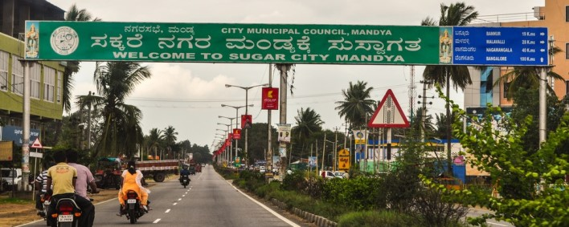

Mandya District is an administrative district of Karnataka, India. The district is bordered on the south by Mysore District, on the west by Hassan District, on the north by Tumkur District and on the east by Ramanagar district. The district Mandya was carved out of larger Mysore district in the year 1939.